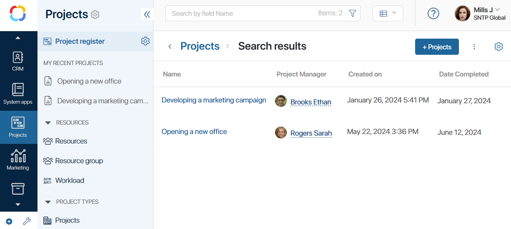
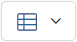

Projects is a built-in workspace in BRIX that is used for managing the company’s projects. Here you can create neat project plans, assign tasks to employees, monitor each project step, and evaluate the results of completed projects.

The workspace consists of:
- The Project register page. Here you can see all the current projects of the company and open any project page.
- The My Recent Projects separator. Here you can see the projects that you have recently opened or created.
- The Resources separator. There are directories for working with resources in project tasks.
- The Project Types separator. The types of projects created by the administrator are displayed here. To create a project of a certain type, go to the corresponding app.
- Projects, Project Plan, Project Plan Element, and Project Task system apps. They are only used by the administrator, so they’re hidden from the left menu by default. These apps store all the created projects, project plans and tasks as separate app items. These apps allow you to set up the project page, define how the project plan and project tasks are managed, or configure access to the workspace. To learn more, see Set up the Projects workspace and Set up access and roles in Projects.
- The Projects archive page. It is hidden by default in the left menu of the workspace. The archive contains all completed projects that can be restored to be processed.
Project register
Click on the name of a project to open its page. The page contains information about the project team and deadlines, and shows the project plan and a list of tasks assigned to the user. Here you can view project files and leave a comment in the activity stream. The project manager can also edit the project plan, send it for approval, or publish it.
By default, entries are displayed as a table. To choose to display as tiles with a set of fields, click  at the top of the page.
To add a new project, click +Project in the top right corner of the page.
If a project is finished, you can archive it.
My recent projects
The projects you have recently opened, for example, viewed their plan or list of tasks, will be displayed in the left menu under the My Recent Projects separator. You can quickly open a project by clicking its name.
Project types
Here you can view and create projects of any type. The system administrator defines these types at the stage of setting up the Projects workspace. Each type can contain a unique plan template, project page, statuses, and processes. The user can work with a project of any type in the same way as with a general project.
Found a typo? Select it and press Ctrl+Enter to send us feedback